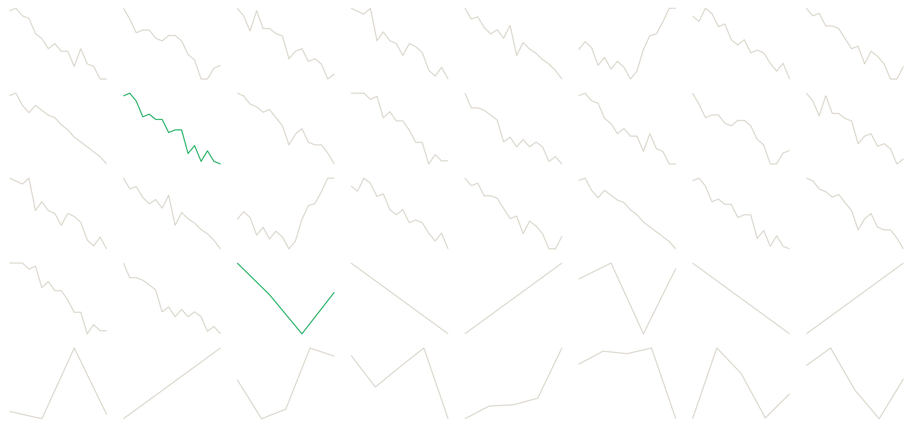

The Bulletin
Reproducible Statistical Reporting with Quarto — Day 1
2026-09-21
DAY 1 · 09:00–14:00
One finished product. Everything else is how it got made.
Do not introduce yourself yet. Open the finished bulletin first — slide 2. The room should see the product before they hear a name or an agenda.
THE REVEAL
Open artifacts/bulletin/bulletin.html now. Do not explain it.
Five minutes, live. Scroll the bulletin. Point at the headline, the two charts, the table, the callout. Say nothing about how it was made.
Then open bulletin.qmd. It is about 120 lines. Let the silence do the work.
Then: “Four moves got us from this to that. That is the whole of today.”
Change region: Jazan to region: Riyadh, re-render, and show that every number in the prose has moved. That single demo is the argument for the entire course.
Today
Block 1
Two kinds of analysis, and why Quarto
Block 2
What a document is made of
Block 3
Figures, tables, references
By 14:00 you will have a bulletin that re-renders when the data changes.
Before we start
quarto check # Quarto, R, and the knitr engine :: restore () # the packages, from the internal mirror :: quarto_render ("artifacts/bulletin/bulletin.qmd" )If that last line produced a file, you are ready.
Ask for a show of hands. Fix problems now, not at 13:15. If more than three people are stuck, pair them with someone who is working — do not debug 20 machines from the front.
BLOCK 1 · 09:00–10:15
The report is not the analysis
The re-run test
Your manager asks for Q3 instead of Q2. How long?
If the answer is days
Numbers are copied by hand. Somebody re-checks them. Somebody misses one.
If the answer is minutes
The pipeline is the document. Nothing is re-checked because nothing was retyped.
Ask the question and wait. Let someone in the room say “a week.”
Then the costs, by name: copy-paste drift. The 11pm correction before publication. The number nobody can trace to a line of code.
RAP — Reproducible Analytical Pipelines — is the UK statistical service’s answer, and it has levels: baseline, silver, gold. Ask the room where they think GASTAT sits today. Do not answer for them.
Why Quarto, specifically
RAP is code, version control, a reproducible environment, no manual steps. Quarto is RAP’s publishing layer.
One source → HTML, Word, PDF, slides, dashboard. The reviewer’s format and the published format come from the same file.
Language-agnostic — the Python teams share one toolchain and one house style.
_brand.yml makes institutional identity a file, not a habit. It survives staff turnover.Typst renders PDF with no LaTeX install. On an air-gapped box that is the whole game.
Against Word, one line: the number you typed is not the number you computed.
The honest limit, and say it out loud: Quarto does not make your analysis reproducible. renv and version control do that. Quarto makes the report reproducible.
Claiming less here buys you credibility for the rest of the three days. Somebody in the room has been burned by a tool that promised everything.
You made forty charts
Exploratory
For you. Fast, ugly, forty of them, disposable. Nobody else ever sees them.
Explanatory
For them. Slow, finished, two of them, load-bearing. Every one has to earn its place.
The bulletin has two charts. Choosing which two is the job.
This is the slide the graveyard sets up. Do not say this before showing the graveyard — show first, name second.

Let it sit for a beat before saying anything.
“You made these. All of them are real, all from the same data. Two of them go to the minister.”
Then the cull: six charts of the same indicator, on the next slide. The room votes. Then they argue. The argument IS the teaching — let it run the full twelve minutes if it is going well. Attention budget, audience, what a chart has to earn.
The attention budget
Your manager gives the bulletin two minutes .
One headline they will repeat in a meeting
One chart they will screenshot
One number they will be asked about
Everything else is there for the person who doubts the three.
Planning heuristic, not a finding — say so. “Roughly 80 words, one chart, two minutes” is how we are choosing to design, not something measured at GASTAT.
Ask: who here has had a report read in front of them? What did they look at first?
The one-sentence big idea
What
The finding. One number, one comparison.
So what
Why it matters to the person reading.
Now what
What they should do, or watch, next.
Your turn: write the big idea for Jazan. One sentence. Eight minutes.
Give them the trend chart on screen while they write. Eight minutes, silently.
Then three volunteers read theirs aloud. For each, ask the room one question only: “would your manager act on that?”
Do not correct the sentences yourself. Let the room do it.
TAKEAWAY — BLOCK 1
The report is not the analysis. It is the argument the analysis licenses.
BLOCK 2 · 10:30–11:45
One source. No manual numbers.
Three things in every .qmd
--- title : "Labour Market Bulletin" # 1. YAML — the settings params : region : "Jazan" format : html --- `r params$region` stands at ... <!-- 2. prose --> ```{r} ggplot (trend, aes (date, rate)) + geom_line () # 3. cells ```
Open the real bulletin.qmd side by side and point at each of the three as you name it. Nothing more abstract than that. They will meet each one properly in a moment.
Markdown that bites
A line break
Two spaces at the end, or a \
A footnote
Text[^1] then [^1]: The note.
Inline maths
$\bar{x} = 6.6$
A cross-reference
@fig-trend, @tbl-recent
A table
Write it, or let tinytable build it
Everything else is in templates/markdown-cheatsheet.qmd.
Ten minutes, no more. This room writes markdown already — you are patching five specific holes, not teaching from zero.
The line break is the one that causes real anger. Everyone arrives expecting Word.
Footnotes matter because statistical bulletins live on them.
Where your document goes
flowchart LR
A["bulletin.qmd"] --> B["knitr<br/>runs the R"]
B --> C["markdown<br/>plain text"]
C --> D["Pandoc<br/>converts"]
D --> E["HTML"]
D --> F["Word"]
D --> G["Typst → PDF"]
Errors belong to a stage. Find the stage, and you have found the error.
Draw this on the board as well as showing it. They will redraw it themselves later.
An R error is stage 2 — your code is wrong. A “pandoc: unknown option” is stage 4 — your YAML is wrong. A missing font is stage 5 — the output engine is wrong.
This diagram is what makes the break-it exercise on Day 2 tractable. Tell them it is coming.
Five cell options that earn their keep
```{r} #| label: fig-trend # names it, and makes @fig-trend work #| fig-cap: "Jazan moved against the national trend" #| echo: false # run it, hide the code #| warning: false # hide the noise, not the errors #| eval: true # run it at all ```
label — the only one that changes what the reader can doecho / eval / include — three different kinds of “hide”warning + message — the noise floor
Live-code this. Start with a raw ggplot call, echo on, warnings on, no caption — ugly. Add the options one at a time until it looks like the bulletin. Narrate each one.
Three kinds of hide is the part people get wrong: echo: false runs and hides the code, eval: false shows the code and does not run it, include: false runs it and shows nothing at all.
No number is typed
`r sprintf('%.1f%%', latest_rate)` `r latest_q` .Renders as:
Unemployment stands at 11.1% in 2025Q4 .
Change the data. The sentence changes. Nobody re-checks it.
The demo: change params$region from Jazan to Riyadh, re-render, and read the new sentence aloud. “Risen” became “fallen” without anybody editing prose.
This is the moment the course either lands or does not. Do it slowly.
TAKEAWAY — BLOCK 2
One source. No manual numbers. Nothing left to re-check.
Two captions, same chart
Descriptive
“Unemployment by region, 2025Q4”
Tells the reader what they are already looking at.
Message
“Jazan has the highest rate of any region”
Tells the reader what to conclude.
Your figure caption is the only sentence some readers will read.
Put three descriptive captions on the board from real GASTAT publications — or from the bulletin — and have the room rewrite them as message titles, out loud, together.
Fifteen minutes. This is the highest-value fifteen minutes of Day 1 and it needs no software.
Cross-references and the margin
## What this means
@fig-, @tbl-, @sec- — numbering that never goes staleCallouts carry the “so what”
Detail goes in the margin; the argument stays on the line
Progressive disclosure: the reader who trusts you reads the line. The reader who doubts you reads the margin. Both are served by one document.
Show the collapsed method note in the HTML bulletin — that is the pattern.
Tables that survive the trip
library (tinytable)tt (recent) |> format_tt (digits = 1 ) |> style_tt (i = 0 , bold = TRUE , line = "b" , line_color = "#4137A8" )
tinytable because it is the one that reaches HTML, Word and Typst PDF from one call.
Be honest about the choice: gt is beautiful in HTML and weak in Word. flextable is excellent in Word and has no Typst path. We picked the one that survives all three, because Day 2 is about one source reaching many formats.
If anyone uses gt today, say: keep using it for HTML-only work. Nothing here forbids it.
TAKEAWAY — BLOCK 3
A caption is an argument, not a label.
Lab: your two pages
Open labs/lab1-start.qmd. Data is loaded, brand applied.
Build
Headline from your big idea · 2 figures with message titles · 1 tinytable · 1 callout
Rule
Every number inline. Nothing typed.
Done test
Change region at the top. Re-render. Every number moves.
Thirty-five minutes to build, ten for three volunteers to show.
At minute 20, walk the room. At minute 30, if a third are stuck, stop everyone and say: “open lab1-solution.qmd and read it against your own file.” Nobody leaves without a rendered document.
One bulletin becomes thirteen
Same file. One parameter. A folder of finished reports.
Do not preview the mechanism. Just the promise, then stop. They should leave wondering how.